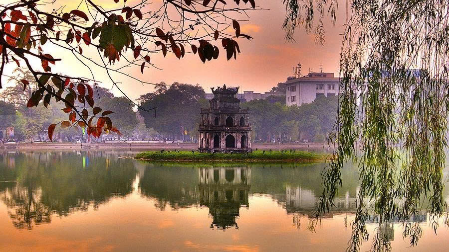
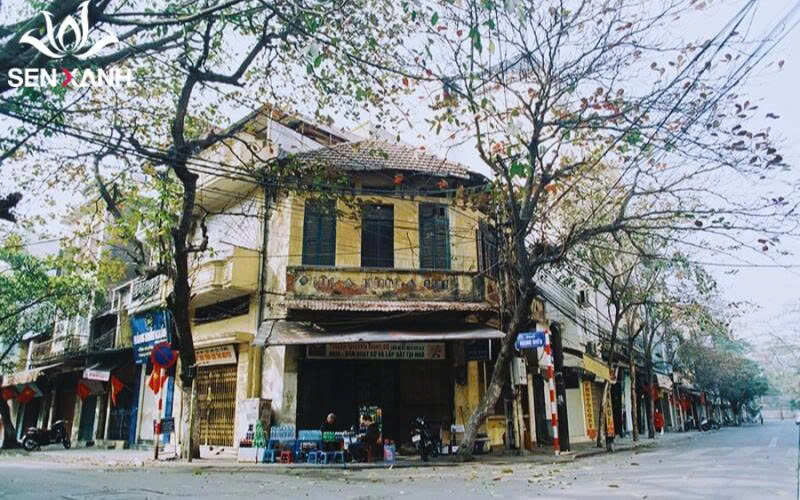
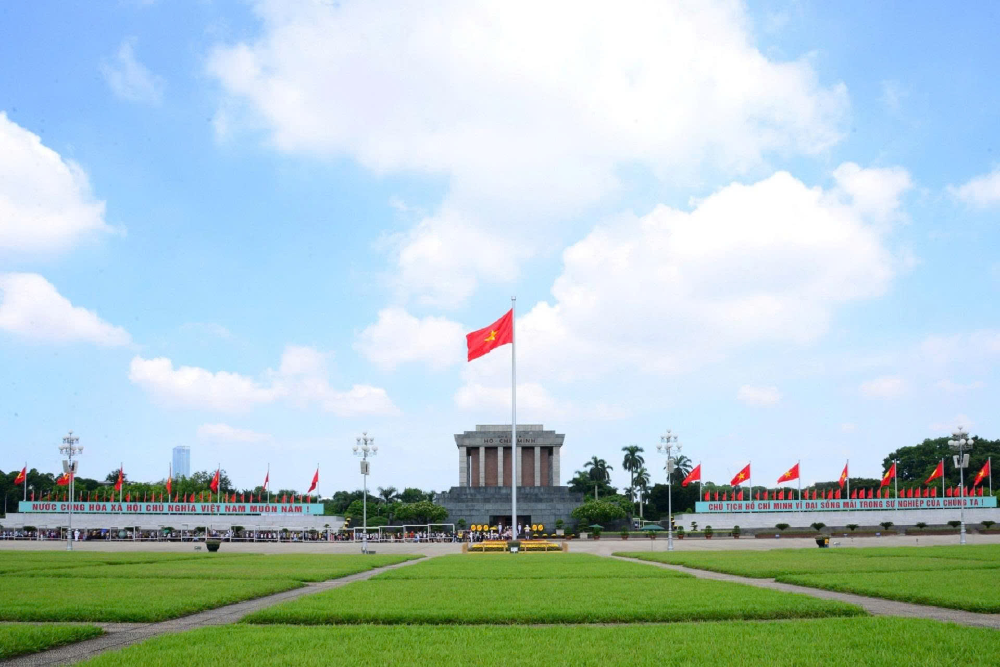
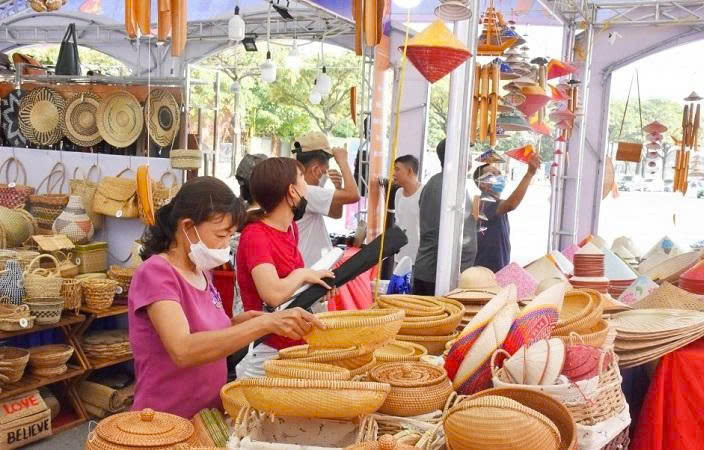
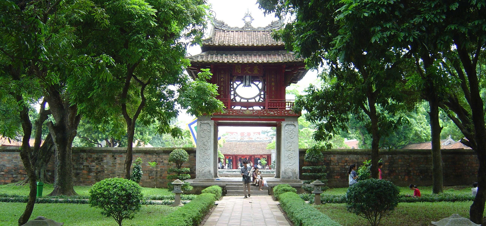

Những Địa Điểm Thăm Quan Hấp Dẫn

Hồ Hoàn Kiếm
Vị Trí: Quận Hoàn Kiếm, Hà Nội
Mô Tả: Hồ Hoàn Kiếm là biểu tượng của Hà Nội, với cảnh quan tuyệt đẹp. Du khách có thể dạo bộ xung quanh hồ, thăm Đền Ngọc Sơn, hoặc ngắm hoàng hôn.
Thời Gian Lý Tưởng: Sáng sớm hoặc chiều tối

Phố Cổ Hà Nội
Vị Trí: Quận Hoàn Kiếm
Mô Tả: 36 phố phường cổ kính với kiến trúc Pháp-Việt độc đáo. Là nơi lý tưởng để mua sắm, ăn uống và tìm hiểu văn hóa Hà Nội.
Thời Gian Lý Tưởng: Buổi tối (khoảng 5 chiều)

🏛️ Lăng Chủ tịch Hồ Chí Minh
Vị Trí: Quận Ba Đình
Mô Tả: Lăng mộ của Chủ tịch Hồ Chí Minh, là di tích lịch sử quan trọng. Kiến trúc ấn tượng, luôn được bảo vệ chặt chẽ.
Lưu Ý: Mặc áo trang trọng, có quy định chụp ảnh

Hàng Lưu Thương & Ẩm Thực
Vị Trí: Phố Cổ Hà Nội
Mô Tả: Nơi nổi tiếng với những quán ăn vỉa hè lâu đời. Thưởng thức phở, cơm tấm, bánh mì đặc sắc của Hà Nội.
Đặc Sản: Phở lâu 40 năm, cơm tấm Thanh Huyền

Văn Miếu - Quốc Tử Giám
Vị Trí: Quận Đống Đa
Mô Tả: Trường Đại học lâu đời nhất Việt Nam, nơi đào tạo nhân tài. Có 80 bảng đá ghi tên những tiến sĩ từ thế kỷ XV.
Đặc Biệt: Kiến trúc cổ, không gian yên tĩnh, giá vé vô cùng rẻ
Các Địa Điểm Khác Không Nên Bỏ Lỡ:
- Tháp Rùa: Biểu tượng cổ kính giữa Hồ Hoàn Kiếm
- Bảo Tàng Quốc Gia Việt Nam: Tìm hiểu lịch sử nước nhà
- Vườn Quốc Gia Ba Vì: Thiên nhiên hoang sơ gần Hà Nội
- Nhà Thờ Lớn Hà Nội: Kiến trúc Pháp cổ kính
- Chợ Đêm 19 Tháng 12: Mua sắm đặc sản Hà Nội
- Hàng Mây - Dạo Mua Sắm: Len sợi, dệt thủ công truyền thống